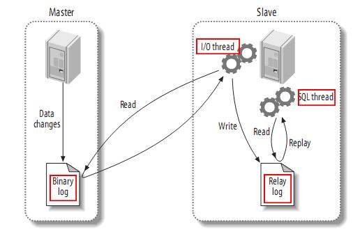

1 复制概述
Mysql内建的复制功能是构建大型，高性能应用程序的基础。将Mysql的数据分布到多个系统上去，这种分布的机制，是通过将Mysql的某一台主机的数据复制到其它主机（slaves）上，并重新执行一遍来实现的。复制过程中一个服务器充当主服务器，而一个或多个其它服务器充当从服务器。主服务器将更新写入二进制日志文件，并维护文件的一个索引以跟踪日志循环。这些日志可以记录发送到从服务器的更新。当一个从服务器连接主服务器时，它通知主服务器从服务器在日志中读取的最后一次成功更新的位置。从服务器接收从那时起发生的任何更新，然后封锁并等待主服务器通知新的更新。
请注意当你进行复制时，所有对复制中的表的更新必须在主服务器上进行。否则，你必须要小心，以避免用户对主服务器上的表进行的更新与对从服务器上的表所进行的更新之间的冲突。
1.1 mysql支持的复制类型：
（１）：基于语句的复制： 在主服务器上执行的SQL语句，在从服务器上执行同样的语句。MySQL默认采用基于语句的复制，效率比较高。
一旦发现没法精确复制时， 会自动选着基于行的复制。
（２）：基于行的复制：把改变的内容复制过去，而不是把命令在从服务器上执行一遍. 从mysql5.0开始支持
（３）：混合类型的复制: 默认采用基于语句的复制，一旦发现基于语句的无法精确的复制时，就会采用基于行的复制。
1.2 . 复制解决的问题
MySQL复制技术有以下一些特点：
(1) 数据分布 (Data distribution )
(2) 负载平衡(load balancing)
(3) 备份(Backups)
(4) 高可用性和容错行 High availability and failover
1.3 复制如何工作
整体上来说，复制有3个步骤：
(1) master将改变记录到二进制日志(binary log)中（这些记录叫做二进制日志事件，binary log events）；
(2) slave将master的binary log events拷贝到它的中继日志(relay log)；
(3) slave重做中继日志中的事件，将改变反映它自己的数据。
下图描述了复制的过程：

该过程的第一部分就是master记录二进制日志。在每个事务更新数据完成之前，master在二日志记录这些改变。MySQL将事务串行的写入二进制日志，即使事务中的语句都是交叉执行的。在事件写入二进制日志完成后，master通知存储引擎提交事务。
下一步就是slave将master的binary log拷贝到它自己的中继日志。首先，slave开始一个工作线程——I/O线程。I/O线程在master上打开一个普通的连接，然后开始binlog dump process。Binlog dump process从master的二进制日志中读取事件，如果已经跟上master，它会睡眠并等待master产生新的事件。I/O线程将这些事件写入中继日志。
SQL slave thread（SQL从线程）处理该过程的最后一步。SQL线程从中继日志读取事件，并重放其中的事件而更新slave的数据，使其与master中的数据一致。只要该线程与I/O线程保持一致，中继日志通常会位于OS的缓存中，所以中继日志的开销很小。
此外，在master中也有一个工作线程：和其它MySQL的连接一样，slave在master中打开一个连接也会使得master开始一个线程。复制过程有一个很重要的限制——复制在slave上是串行化的，也就是说master上的并行更新操作不能在slave上并行操作。
2 .复制配置
有两台MySQL数据库服务器Master和slave，Master为主服务器，slave为从服务器，初始状态时，Master和slave中的数据信息相同，当Master中的数据发生变化时，slave也跟着发生相应的变化，使得master和slave的数据信息同步，达到备份的目的。
要点：
负责在主、从服务器传输各种修改动作的媒介是主服务器的二进制变更日志，这个日志记载着需要传输给从服务器的各种修改动作。因此，主服务器必须激活二进制日志功能。从服务器必须具备足以让它连接主服务器并请求主服务器把二进制变更日志传输给它的权限。
环境：
Master和slave的MySQL数据库版本同为5.0.18
操作系统：unbuntu 11.10
IP地址：10.100.0.100
2.1、创建复制帐号
1、在Master的数据库中建立一个备份帐户：每个slave使用标准的MySQL用户名和密码连接master。进行复制操作的用户会授予REPLICATION SLAVE权限。用户名的密码都会存储在文本文件master.info中
命令如下：
mysql > GRANT REPLICATION SLAVE,RELOAD,SUPER ON *.*
TO backup@’10.100.0.200’
IDENTIFIED BY ‘1234’;
建立一个帐户backup，并且只能允许从10.100.0.200这个地址上来登陆，密码是1234。
(如果因为mysql版本新旧密码算法不同，可以设置：set password for 'backup'@'10.100.0.200'=old_password('1234')）
2.2、拷贝数据
（假如是你完全新安装mysql主从服务器，这个一步就不需要。因为新安装的master和slave有相同的数据）
关停Master服务器，将Master中的数据拷贝到B服务器中，使得Master和slave中的数据同步，并且确保在全部设置操作结束前，禁止在Master和slave服务器中进行写操作，使得两数据库中的数据一定要相同！
2.3、配置master
接下来对master进行配置，包括打开二进制日志，指定唯一的servr ID。例如，在配置文件加入如下值：
server-id=1
log-bin=mysql-bin
server-id：为主服务器A的ID值
log-bin：二进制变更日值
重启master，运行SHOW MASTER STATUS，输出如下：
2.4、配置slave
Slave的配置与master类似，你同样需要重启slave的MySQL。如下：
log_bin = mysql-bin
server_id = 2
relay_log = mysql-relay-bin
log_slave_updates = 1
read_only = 1
server_id是必须的，而且唯一。slave没有必要开启二进制日志，但是在一些情况下，必须设置，例如，如果slave为其它slave的master，必须设置bin_log。在这里，我们开启了二进制日志，而且显示的命名(默认名称为hostname，但是，如果hostname改变则会出现问题)。
relay_log配置中继日志，log_slave_updates表示slave将复制事件写进自己的二进制日志(后面会看到它的用处)。
有些人开启了slave的二进制日志，却没有设置log_slave_updates，然后查看slave的数据是否改变，这是一种错误的配置。所以，尽量使用read_only，它防止改变数据(除了特殊的线程)。但是，read_only并是很实用，特别是那些需要在slave上创建表的应用。
2.5、启动slave
接下来就是让slave连接master，并开始重做master二进制日志中的事件。你不应该用配置文件进行该操作，而应该使用CHANGE MASTER TO语句，该语句可以完全取代对配置文件的修改，而且它可以为slave指定不同的master，而不需要停止服务器。如下：
mysql> CHANGE MASTER TO MASTER_HOST='server1',
-> MASTER_USER='repl',
-> MASTER_PASSWORD='p4ssword',
-> MASTER_LOG_FILE='mysql-bin.000001',
-> MASTER_LOG_POS=0;
MASTER_LOG_POS的值为0，因为它是日志的开始位置。
你可以用SHOW SLAVE STATUS语句查看slave的设置是否正确：
mysql> SHOW SLAVE STATUS\G
*************************** 1. row ***************************
Slave_IO_State:
Master_Host: server1
Master_User: repl
Master_Port: 3306
Connect_Retry: 60
Master_Log_File: mysql-bin.000001
Read_Master_Log_Pos: 4
Relay_Log_File: mysql-relay-bin.000001
Relay_Log_Pos: 4
Relay_Master_Log_File: mysql-bin.000001
Slave_IO_Running: No
Slave_SQL_Running: No
...omitted...
Seconds_Behind_Master: NULL
Slave_IO_State, Slave_IO_Running, 和Slave_SQL_Running是No
表明slave还没有开始复制过程。日志的位置为4而不是0，这是因为0只是日志文件的开始位置，并不是日志位置。实际上，MySQL知道的第一个事件的位置是4。
为了开始复制，你可以运行：
mysql> START SLAVE;
运行SHOW SLAVE STATUS查看输出结果：
mysql> SHOW SLAVE STATUS\G
*************************** 1. row ***************************
Slave_IO_State: Waiting for master to send event
Master_Host: server1
Master_User: repl
Master_Port: 3306
Connect_Retry: 60
Master_Log_File: mysql-bin.000001
Read_Master_Log_Pos: 164
Relay_Log_File: mysql-relay-bin.000001
Relay_Log_Pos: 164
Relay_Master_Log_File: mysql-bin.000001
Slave_IO_Running: Yes
Slave_SQL_Running: Yes
...omitted...
Seconds_Behind_Master: 0
在这里主要是看:
Slave_IO_Running=Yes
Slave_SQL_Running=Yes
slave的I/O和SQL线程都已经开始运行，而且Seconds_Behind_Master不再是NULL。日志的位置增加了，意味着一些事件被获取并执行了。如果你在master上进行修改，你可以在slave上看到各种日志文件的位置的变化，同样，你也可以看到数据库中数据的变化。
你可查看master和slave上线程的状态。在master上，你可以看到slave的I/O线程创建的连接：
在master上输入show processlist\G;
mysql> show processlist \G *************************** 1. row *************************** Id: 1 User: root Host: localhost:2096 db: test Command: Query Time: 0 State: NULL Info: show processlist *************************** 2. row *************************** Id: 2 User: repl Host: localhost:2144 db: NULL Command: Binlog Dump Time: 1838 State: Has sent all binlog to slave; waiting for binlog to be updated Info: NULL 2 rows in set (0.00 sec) |
行2为处理slave的I/O线程的连接。
在slave服务器上运行该语句：
mysql> show processlist \G *************************** 1. row *************************** Id: 1 User: system user Host: db: NULL Command: Connect Time: 2291 State: Waiting for master to send event Info: NULL *************************** 2. row *************************** Id: 2 User: system user Host: db: NULL Command: Connect Time: 1852 State: Has read all relay log; waiting for the slave I/O thread to update it Info: NULL *************************** 3. row *************************** Id: 5 User: root Host: localhost:2152 db: test Command: Query Time: 0 State: NULL Info: show processlist 3 rows in set (0.00 sec) |
行1为I/O线程状态，行2为SQL线程状态。
2.5、添加新slave服务器
假如master已经运行很久了，想对新安装的slave进行数据同步，甚至它没有master的数据。
此时，有几种方法可以使slave从另一个服务开始，例如，从master拷贝数据，从另一个slave克隆，从最近的备份开始一个slave。Slave与master同步时，需要三样东西：
(1)master的某个时刻的数据快照；
(2)master当前的日志文件、以及生成快照时的字节偏移。这两个值可以叫做日志文件坐标(log file coordinate)，因为它们确定了一个二进制日志的位置，你可以用SHOW MASTER STATUS命令找到日志文件的坐标；
(3)master的二进制日志文件。
可以通过以下几中方法来克隆一个slave：
(1) 冷拷贝(cold copy)
停止master，将master的文件拷贝到slave；然后重启master。缺点很明显。
(2) 热拷贝(warm copy)
如果你仅使用MyISAM表，你可以使用mysqlhotcopy拷贝，即使服务器正在运行。
(3) 使用mysqldump
使用mysqldump来得到一个数据快照可分为以下几步：
<1>锁表：如果你还没有锁表，你应该对表加锁，防止其它连接修改数据库，否则，你得到的数据可以是不一致的。如下：
mysql> FLUSH TABLES WITH READ LOCK;
<2>在另一个连接用mysqldump创建一个你想进行复制的数据库的转储：
shell> mysqldump --all-databases --lock-all-tables >dbdump.db
<3>对表释放锁。
mysql> UNLOCK TABLES;
3、深入了解复制
已经讨论了关于复制的一些基本东西，下面深入讨论一下复制。
3.1、基于语句的复制(Statement-Based Replication)
MySQL 5.0及之前的版本仅支持基于语句的复制（也叫做逻辑复制，logical replication），这在数据库并不常见。master记录下改变数据的查询，然后，slave从中继日志中读取事件，并执行它，这些SQL语句与master执行的语句一样。
这种方式的优点就是实现简单。此外，基于语句的复制的二进制日志可以很好的进行压缩，而且日志的数据量也较小，占用带宽少——例如，一个更新GB的数据的查询仅需要几十个字节的二进制日志。而mysqlbinlog对于基于语句的日志处理十分方便。
但是，基于语句的复制并不是像它看起来那么简单，因为一些查询语句依赖于master的特定条件，例如，master与slave可能有不同的时间。所以，MySQL的二进制日志的格式不仅仅是查询语句，还包括一些元数据信息，例如，当前的时间戳。即使如此，还是有一些语句，比如，CURRENT USER函数，不能正确的进行复制。此外，存储过程和触发器也是一个问题。
另外一个问题就是基于语句的复制必须是串行化的。这要求大量特殊的代码，配置，例如InnoDB的next-key锁等。并不是所有的存储引擎都支持基于语句的复制。
3.2、基于记录的复制(Row-Based Replication)
MySQL增加基于记录的复制，在二进制日志中记录下实际数据的改变，这与其它一些DBMS的实现方式类似。这种方式有优点，也有缺点。优点就是可以对任何语句都能正确工作，一些语句的效率更高。主要的缺点就是二进制日志可能会很大，而且不直观，所以，你不能使用mysqlbinlog来查看二进制日志。
对于一些语句，基于记录的复制能够更有效的工作，如：
mysql> INSERT INTO summary_table(col1, col2, sum_col3)
-> SELECT col1, col2, sum(col3)
-> FROM enormous_table
-> GROUP BY col1, col2;
假设，只有三种唯一的col1和col2的组合，但是，该查询会扫描原表的许多行，却仅返回三条记录。此时，基于记录的复制效率更高。
另一方面，下面的语句，基于语句的复制更有效：
mysql> UPDATE enormous_table SET col1 = 0;
此时使用基于记录的复制代价会非常高。由于两种方式不能对所有情况都能很好的处理，所以，MySQL 5.1支持在基于语句的复制和基于记录的复制之前动态交换。你可以通过设置session变量binlog_format来进行控制。
3.3、复制相关的文件
除了二进制日志和中继日志文件外，还有其它一些与复制相关的文件。如下：
(1)mysql-bin.index
服务器一旦开启二进制日志，会产生一个与二日志文件同名，但是以.index结尾的文件。它用于跟踪磁盘上存在哪些二进制日志文件。MySQL用它来定位二进制日志文件。它的内容如下(我的机器上)：
(2)mysql-relay-bin.index
该文件的功能与mysql-bin.index类似，但是它是针对中继日志，而不是二进制日志。内容如下：
.\mysql-02-relay-bin.000017
.\mysql-02-relay-bin.000018
(3)master.info
保存master的相关信息。不要删除它，否则，slave重启后不能连接master。内容如下(我的机器上)：
I/O线程更新master.info文件，内容如下(我的机器上)：
.\mysql-02-relay-bin.000019 254 mysql-01-bin.000010 286 0 52813 |
(4)relay-log.info
包含slave中当前二进制日志和中继日志的信息。
3.4、发送复制事件到其它slave
当设置log_slave_updates时，你可以让slave扮演其它slave的master。此时，slave把SQL线程执行的事件写进行自己的二进制日志(binary log)，然后，它的slave可以获取这些事件并执行它。如下：
3.5、复制过滤(Replication Filters)
复制过滤可以让你只复制服务器中的一部分数据，有两种复制过滤：在master上过滤二进制日志中的事件；在slave上过滤中继日志中的事件。如下：
4、复制的常用拓扑结构
复制的体系结构有以下一些基本原则：
(1) 每个slave只能有一个master；
(2) 每个slave只能有一个唯一的服务器ID；
(3) 每个master可以有很多slave；
(4) 如果你设置log_slave_updates，slave可以是其它slave的master，从而扩散master的更新。
MySQL不支持多主服务器复制(Multimaster Replication)——即一个slave可以有多个master。但是，通过一些简单的组合，我们却可以建立灵活而强大的复制体系结构。
4.1、单一master和多slave
由一个master和一个slave组成复制系统是最简单的情况。Slave之间并不相互通信，只能与master进行通信。
在实际应用场景中，MySQL复制90%以上都是一个Master复制到一个或者多个Slave的架构模式，主要用于读压力比较大的应用的数据库端廉价扩展解决方案。因为只要Master和Slave的压力不是太大（尤其是Slave端压力）的话，异步复制的延时一般都很少很少。尤其是自从Slave端的复制方式改成两个线程处理之后，更是减小了Slave端的延时问题。而带来的效益是，对于数据实时性要求不是特别Critical的应用，只需要通过廉价的pcserver来扩展Slave的数量，将读压力分散到多台Slave的机器上面，即可通过分散单台数据库服务器的读压力来解决数据库端的读性能瓶颈，毕竟在大多数数据库应用系统中的读压力还是要比写压力大很多。这在很大程度上解决了目前很多中小型网站的数据库压力瓶颈问题，甚至有些大型网站也在使用类似方案解决数据库瓶颈。
如下：
如果写操作较少，而读操作很时，可以采取这种结构。你可以将读操作分布到其它的slave，从而减小master的压力。但是，当slave增加到一定数量时，slave对master的负载以及网络带宽都会成为一个严重的问题。
这种结构虽然简单，但是，它却非常灵活，足够满足大多数应用需求。一些建议：
(1) 不同的slave扮演不同的作用(例如使用不同的索引，或者不同的存储引擎)；
(2) 用一个slave作为备用master，只进行复制；
(3) 用一个远程的slave，用于灾难恢复；
大家应该都比较清楚，从一个Master节点可以复制出多个Slave节点，可能有人会想，那一个Slave节点是否可以从多个Master节点上面进行复制呢？至少在目前来看，MySQL是做不到的，以后是否会支持就不清楚了。
MySQL不支持一个Slave节点从多个Master节点来进行复制的架构，主要是为了避免冲突的问题，防止多个数据源之间的数据出现冲突，而造成最后数据的不一致性。不过听说已经有人开发了相关的patch，让MySQL支持一个Slave节点从多个Master结点作为数据源来进行复制，这也正是MySQL开源的性质所带来的好处。
4.2、主动模式的Master-Master(Master-Master in Active-Active Mode)
Master-Master复制的两台服务器，既是master，又是另一台服务器的slave。这样，任何一方所做的变更，都会通过复制应用到另外一方的数据库中。
可能有些读者朋友会有一个担心，这样搭建复制环境之后，难道不会造成两台MySQL之间的循环复制么？实际上MySQL自己早就想到了这一点，所以在MySQL的BinaryLog中记录了当前MySQL的server-id，而且这个参数也是我们搭建MySQLReplication的时候必须明确指定，而且Master和Slave的server-id参数值比需要不一致才能使MySQLReplication搭建成功。一旦有了server-id的值之后，MySQL就很容易判断某个变更是从哪一个MySQLServer最初产生的，所以就很容易避免出现循环复制的情况。而且，如果我们不打开记录Slave的BinaryLog的选项（--log-slave-update）的时候，MySQL根本就不会记录复制过程中的变更到BinaryLog中，就更不用担心可能会出现循环复制的情形了。
主动的Master-Master复制有一些特殊的用处。例如，地理上分布的两个部分都需要自己的可写的数据副本。这种结构最大的问题就是更新冲突。假设一个表只有一行(一列)的数据，其值为1，如果两个服务器分别同时执行如下语句：
在第一个服务器上执行：
mysql> UPDATE tbl SET col=col + 1;
在第二个服务器上执行：
mysql> UPDATE tbl SET col=col * 2;
那么结果是多少呢？一台服务器是4，另一个服务器是3，但是，这并不会产生错误。
实际上，MySQL并不支持其它一些DBMS支持的多主服务器复制(Multimaster Replication)，这是MySQL的复制功能很大的一个限制(多主服务器的难点在于解决更新冲突)，但是，如果你实在有这种需求，你可以采用MySQL Cluster，以及将Cluster和Replication结合起来，可以建立强大的高性能的数据库平台。但是，可以通过其它一些方式来模拟这种多主服务器的复制。
4.3、主动-被动模式的Master-Master(Master-Master in Active-Passive Mode)
这是master-master结构变化而来的，它避免了M-M的缺点，实际上，这是一种具有容错和高可用性的系统。它的不同点在于其中一个服务只能进行只读操作。如图：
4.4 级联复制架构 Master –Slaves - Slaves
在有些应用场景中，可能读写压力差别比较大，读压力特别的大，一个Master可能需要上10台甚至更多的Slave才能够支撑注读的压力。这时候，Master就会比较吃力了，因为仅仅连上来的SlaveIO线程就比较多了，这样写的压力稍微大一点的时候，Master端因为复制就会消耗较多的资源，很容易造成复制的延时。
遇到这种情况如何解决呢？这时候我们就可以利用MySQL可以在Slave端记录复制所产生变更的BinaryLog信息的功能，也就是打开—log-slave-update选项。然后，通过二级（或者是更多级别）复制来减少Master端因为复制所带来的压力。也就是说，我们首先通过少数几台MySQL从Master来进行复制，这几台机器我们姑且称之为第一级Slave集群，然后其他的Slave再从第一级Slave集群来进行复制。从第一级Slave进行复制的Slave，我称之为第二级Slave集群。如果有需要，我们可以继续往下增加更多层次的复制。这样，我们很容易就控制了每一台MySQL上面所附属Slave的数量。这种架构我称之为Master-Slaves-Slaves架构
这种多层级联复制的架构，很容易就解决了Master端因为附属Slave太多而成为瓶颈的风险。下图展示了多层级联复制的Replication架构。
当然，如果条件允许，我更倾向于建议大家通过拆分成多个Replication集群来解决
上述瓶颈问题。毕竟Slave并没有减少写的量，所有Slave实际上仍然还是应用了所有的数据变更操作，没有减少任何写IO。相反，Slave越多，整个集群的写IO总量也就会越多，我们没有非常明显的感觉，仅仅只是因为分散到了多台机器上面，所以不是很容易表现出来。
此外，增加复制的级联层次，同一个变更传到最底层的Slave所需要经过的MySQL也会更多，同样可能造成延时较长的风险。
而如果我们通过分拆集群的方式来解决的话，可能就会要好很多了，当然，分拆集群也需要更复杂的技术和更复杂的应用系统架构。
4.5、带从服务器的Master-Master结构(Master-Master with Slaves)
这种结构的优点就是提供了冗余。在地理上分布的复制结构，它不存在单一节点故障问题，而且还可以将读密集型的请求放到slave上。
级联复制在一定程度上面确实解决了Master因为所附属的Slave过多而成为瓶颈的问题，但是他并不能解决人工维护和出现异常需要切换后可能存在重新搭建Replication的问题。这样就很自然的引申出了DualMaster与级联复制结合的Replication架构，我称之为Master-Master-Slaves架构
和Master-Slaves-Slaves架构相比，区别仅仅只是将第一级Slave集群换成了一台单独的Master，作为备用Master，然后再从这个备用的Master进行复制到一个Slave集群。
这种DualMaster与级联复制结合的架构，最大的好处就是既可以避免主Master的写入操作不会受到Slave集群的复制所带来的影响，同时主Master需要切换的时候也基本上不会出现重搭Replication的情况。但是，这个架构也有一个弊端，那就是备用的Master有可能成为瓶颈，因为如果后面的Slave集群比较大的话，备用Master可能会因为过多的SlaveIO线程请求而成为瓶颈。当然，该备用Master不提供任何的读服务的时候，瓶颈出现的可能性并不是特别高，如果出现瓶颈，也可以在备用Master后面再次进行级联复制，架设多层Slave集群。当然，级联复制的级别越多，Slave集群可能出现的数据延时也会更为明显，所以考虑使用多层级联复制之前，也需要评估数据延时对应用系统的影响。
参考：《高性能 MySQL》